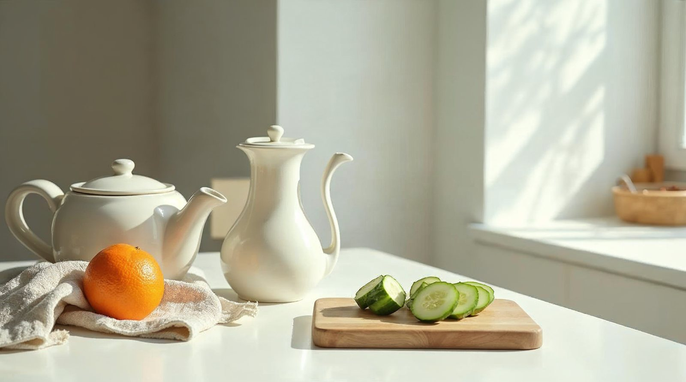
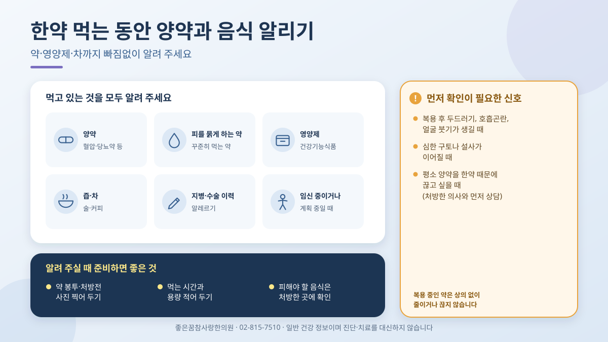

이종호 한의사 감수좋은꿈참사랑한의원 대표원장 (한의사 면허번호 19769)발행 2026-11-22 · 수정 2026-11-27
이 글의 차례
- 왜 먹고 있는 것을 모두 알려야 하나요
- 특히 꼼꼼히 확인하는 경우는 언제인가요
- 먼저 이렇게 여쭙니다
- 알려 주실 때 준비하면 좋은 것
- 약국에서 산 약도 알려야 하나요
- 양약을 줄이고 싶을 때는 어떻게 하나요
- 약 목록은 어떻게 정리하면 될까요
- 음식과 기호품은 어떻게 알려 주면 되나요
- 다른 병원에 갈 때도 한약 복용을 알려 주세요
- 임신 중이거나 임신을 준비 중이라면
- 복용 시간이 헷갈릴 때는 어떻게 하나요
- 여러 약을 함께 드시는 어르신은 무엇을 더 볼까요
- 아이에게 한약을 먹일 때는 무엇을 알려 주나요
- 예전에 한약을 드신 적이 있다면
- 복용 중 몸의 변화는 어떻게 적어 두면 될까요
- 상황별 예시
- 스스로 점검해 보세요
- 한의원에서 함께 살필 수 있는 경우
- 이렇게 기록해 오시면 상담이 쉬워집니다
- 이런 증상은 먼저 확인이 필요합니다
- 관련 글
한약을 드시기 전 가장 중요한 일은 지금 먹고 있는 모든 약과 영양제를 빠짐없이 알려 주시는 것입니다. 한약을 먹는 중에 양약도 함께 드시는 분이 많은데, 서로의 작용에 영향을 줄 수 있어 처방 전에 함께 확인합니다.
평소 즐겨 드시는 차·술·커피도 말씀해 주시고, 피해야 할 음식은 처방 때 안내받은 내용을 따르시면 됩니다.
처음 상담에서 모두 기억나지 않더라도 괜찮습니다. 집에 돌아가 빠뜨린 것이 떠오르면 한약을 받기 전이나 복용을 시작하기 전에 전화로 알려 주세요. 그 한 통의 전화가 처방을 다시 살펴보는 데 큰 도움이 됩니다.
진료실에서 드시는 약을 여쭈면 "혈압약 하나만요" 하셨다가, 약 봉투를 함께 보면 위장약과 영양제, 아침마다 드시는 즙까지 서너 가지가 더 나오는 경우가 많습니다. 본인에게는 너무 익숙해서 약이라고 여기지 않았던 것들입니다. 그래서 저는 기억에 의지하기보다 봉투와 통을 그대로 보여 주시는 방법을 가장 권합니다.
왜 먹고 있는 것을 모두 알려야 하나요
- 양약과 한약, 영양제가 겹치면 서로의 작용에 영향을 줄 수 있어 처방 전에 확인이 필요합니다.
- 혈압약, 당뇨약, 와파린 같은 피를 묽게 하는 약처럼 꾸준히 먹는 약은 특히 꼼꼼히 확인합니다.
- 건강기능식품과 즙, 차처럼 약이 아니라고 생각하기 쉬운 것도 성분이 겹칠 수 있습니다.
- 임신 중이거나 간·콩팥 질환이 있으면 처방을 더 조심해서 정해야 합니다.
같은 약이라도 드시는 양과 시간, 몸의 상태에 따라 살펴야 할 점이 달라집니다. 그래서 약 이름만이 아니라 하루 몇 번, 언제 드시는지까지 알려 주시면 확인이 더 정확해집니다. 모르는 것이 있으면 모른다고 말씀해 주셔도 괜찮습니다. 봉투를 함께 보며 하나씩 찾아가면 됩니다.
특히 꼼꼼히 확인하는 경우는 언제인가요
- 와파린이나 아스피린처럼 피를 묽게 하는 약, 혈전을 막는 약을 드시는 경우
- 당뇨약이나 인슐린, 혈압약처럼 수치를 맞추며 꾸준히 드시는 약이 있는 경우
- 갑상선약, 면역을 조절하는 약, 항암 치료처럼 용량이 세밀하게 정해진 약을 드시는 경우
- 수면제나 기분·불안을 다스리는 약을 드시는 경우
- 간이나 콩팥 수치가 높다는 말을 들은 적이 있는 경우
- 임신 중이거나 임신을 준비 중, 또는 수유 중인 경우
- 수술이나 내시경, 치과 시술 같은 일정이 잡혀 있는 경우
이런 경우에는 처방 전에 드시는 약의 이름과 용량을 더 자세히 여쭙고, 필요하면 담당 의사와 먼저 상의해 보시도록 안내합니다. 확인이 끝나기 전에는 서둘러 처방하지 않습니다.
먼저 이렇게 여쭙니다
- 현재 먹는 양약, 영양제, 건강기능식품이 무엇인가요?
- 지병이나 수술 이력, 알레르기가 있나요?
- 임신 중이거나 계획 중인가요?
- 평소 즐겨 마시는 차, 술, 커피는 어떻게 되나요?
- 최근 새로 시작했거나 끊은 약이 있나요?
알려 주실 때 준비하면 좋은 것
- 약 봉투나 처방전, 약 이름을 사진으로 찍어 두기
- 먹는 시간과 용량을 적어 두기
- 한약 복용 중 불편이 생기면 처방한 곳에 바로 알리기
- 피해야 할 음식은 처방한 한의원에 확인하기
- 다른 병원 진료나 수술 일정이 잡혀 있으면 미리 말하기
- 영양제와 건강식품은 통이나 포장 뒷면의 성분표를 사진으로 찍어 두기
- 가족이 약을 챙겨 준다면 상담 전에 목록을 함께 확인하기
약국에서 산 약도 알려야 하나요
네, 처방전 없이 약국에서 산 약도 알려 주셔야 합니다. 두통이 있을 때 먹는 진통제, 속이 불편할 때 먹는 소화제나 제산제, 변비약, 잠이 안 올 때 먹는 약, 종합감기약처럼 가끔 드시는 약도 포함됩니다.
"가끔 먹는 거라서요" 하며 빼놓기 쉬운데, 일주일에 몇 번 드시는지까지 알려 주시면 더 정확하게 살필 수 있습니다. 해외 직구로 산 영양제나 지인에게 받은 건강식품도 마찬가지로 제품 이름을 알려 주세요.
양약을 줄이고 싶을 때는 어떻게 하나요
한약을 시작하면서 오래 먹던 양약을 줄이거나 끊고 싶다고 말씀하시는 분이 있습니다. 그 마음은 충분히 이해하지만, 양약의 용량을 바꾸는 일은 그 약을 처방한 의사와 상의해서 정해야 합니다.
혈압약이나 당뇨약, 갑상선약처럼 꾸준히 드시는 약은 스스로 끊으면 몸이 크게 흔들릴 수 있습니다. 한약은 드시던 약을 그대로 유지하는 것을 전제로 처방을 정하고, 양약 조절이 필요해 보이면 담당 의사에게 상의해 보시도록 안내합니다.
약 목록은 어떻게 정리하면 될까요
종이 한 장이나 휴대전화 메모에 아래 내용을 적어 두면, 한의원뿐 아니라 어느 병원에 가셔도 쓸 수 있습니다.
- 약 이름: 봉투나 약통에 적힌 이름 그대로(모르면 사진으로)
- 먹는 양과 횟수: 한 번에 몇 알, 하루 몇 번
- 먹는 시간: 아침 식후, 자기 전처럼
- 처방받은 곳: 어느 병원 무슨 과인지
- 시작한 때: 언제부터 드셨는지
- 영양제·건강식품: 제품 이름과 하루 먹는 양
약이 바뀔 때마다 이 목록도 함께 고쳐 두세요. 가족이 대신 챙겨 드리는 어르신이라면, 목록을 한 부 더 만들어 가족도 갖고 계시면 좋습니다.
음식과 기호품은 어떻게 알려 주면 되나요
- 술: 일주일에 몇 번, 한 번에 어느 정도 드시는지 있는 그대로 말씀해 주세요. 복용 중에는 줄이시길 권하는 경우가 많습니다.
- 커피와 차: 하루 몇 잔, 어떤 차를 드시는지 알려 주세요. 녹차나 보이차처럼 매일 드시는 차도 포함합니다.
- 즙과 달인 물: 양배추즙, 도라지즙, 헛개나무 물처럼 꾸준히 드시는 것도 성분이 겹칠 수 있어 함께 확인합니다.
- 홍삼이나 다이어트 보조제: 한약과 비슷한 재료가 들어 있는 경우가 있어 꼭 말씀해 주세요.
- 평소 잘 맞지 않는 음식: 먹으면 속이 불편하거나 피부가 가려웠던 음식이 있다면 알려 주세요.
피해야 할 음식은 처방마다 달라서 한 가지로 정해 말씀드리기 어렵습니다. 처방 때 안내받은 내용을 따르시고, 헷갈리면 전화로 다시 여쭤 주세요.
다른 병원에 갈 때도 한약 복용을 알려 주세요
한약을 드시는 중에 내과나 치과, 다른 병원에 가게 되면 그곳에도 한약을 드시고 있다고 말씀해 주세요. 수술이나 내시경, 치과 시술이 잡혀 있다면 한의원에도 일정을 미리 알려 주시면 복용 계획을 함께 조정합니다.
새로 약을 처방받으셨다면 한약을 계속 드셔도 되는지 다음 복용 전에 전화로 먼저 여쭤 주세요. 감기약이나 진통제처럼 짧게 드시는 약도 마찬가지입니다.
임신 중이거나 임신을 준비 중이라면
임신 가능성이 있거나 임신을 준비 중이라면 상담을 시작할 때 가장 먼저 말씀해 주세요. 처방을 정하는 데 가장 중요한 정보 가운데 하나입니다.
임신 중이라면 한약 복용은 산부인과 담당 의사와 먼저 상의해 보시길 권합니다. 수유 중인 경우에도 아기에게 미칠 영향을 함께 고려해야 해서 미리 알려 주셔야 합니다.
복용 시간이 헷갈릴 때는 어떻게 하나요
- 처방 때 안내받은 복용 시간을 약 봉투나 휴대전화 알림에 적어 둡니다.
- 양약과 한약을 드시는 시간이 겹치면, 각각 처방 때 안내받은 간격을 지킵니다.
- 한 번 빠뜨렸다고 다음에 두 배로 드시지 말고, 다음 시간부터 원래대로 드세요.
- 야근이나 교대 근무로 시간이 자주 바뀐다면 상담 때 하루 일과를 말씀해 주시면 생활에 맞춰 함께 정합니다.
여러 약을 함께 드시는 어르신은 무엇을 더 볼까요
여러 병원을 다니시는 어르신은 진료과마다 약을 따로 받아, 비슷한 약이 겹치거나 본인도 모두 기억하기 어려운 경우가 있습니다. 이럴 때는 드시는 약을 모두 한 봉투에 담아 오시거나, 약국에서 받은 복약 안내문을 함께 챙겨 오시면 도움이 됩니다.
함께 사는 가족이 약을 챙겨 드린다면 상담에 같이 오시거나, 약 목록을 미리 전해 주시면 좋습니다. 어르신은 소화력이 약하고 입맛 변화가 큰 경우도 있어, 식사량과 대변 상태도 함께 여쭙습니다.
아이에게 한약을 먹일 때는 무엇을 알려 주나요
아이에게 한약을 먹이기 전에는 지금 먹고 있는 약과 영양제, 유산균, 알레르기 여부를 알려 주세요. 감기약이나 해열제를 자주 먹는 시기라면 그 일정도 함께 말씀해 주시면 복용 계획을 맞춥니다.
예방접종 일정이 가까이 있거나 단체 생활로 감기가 잦은 시기라면 그 사정도 알려 주세요. 아이가 먹기 힘들어하면 억지로 먹이기보다 먼저 연락해 먹이는 방법을 함께 상의해 주시길 권합니다.
예전에 한약을 드신 적이 있다면
이전에 한약을 드셨던 적이 있다면 언제, 무엇 때문에 드셨는지, 드신 뒤 몸이 어땠는지 알려 주세요. 그때 받은 봉투나 처방 메모가 남아 있다면 함께 가져오시면 참고합니다.
특히 예전에 한약이나 건강식품을 먹고 속이 불편했거나 피부가 가려웠던 적이 있다면 꼭 말씀해 주세요. 그 경험이 이번 처방을 정하는 데 중요한 단서가 됩니다.
복용 중 몸의 변화는 어떻게 적어 두면 될까요
- 소화: 속이 편한지, 더부룩하거나 쓰린 느낌이 있는지
- 대변: 횟수와 굳기가 평소와 달라졌는지
- 잠: 잠드는 데 걸리는 시간, 밤에 깨는 횟수
- 기운: 아침에 일어날 때와 오후의 피로감
- 처음 불편했던 증상: 0에서 10까지 점수로 매긴 변화
하루 한 줄이면 충분합니다. 다음 방문 때 이 기록을 보여 주시면 복용을 이어 갈지, 조절할지를 함께 정하는 데 도움이 됩니다. 가벼운 불편이라도 며칠 이어지면 다음 방문을 기다리지 말고 전화로 먼저 알려 주세요.
상황별 예시
- 예를 들어 혈압약과 고지혈증약을 드시는 분이 아침마다 홍삼과 양배추즙을 함께 드신다면, 약 봉투와 함께 홍삼과 즙의 제품 이름도 사진으로 찍어 오시면 확인이 한결 쉽습니다.
- 예를 들어 한약을 드시는 중에 치과에서 발치 일정이 잡혔다면, 치과에도 한약 복용을 알리고 한의원에는 일정을 미리 전화로 말씀해 주세요.
- 예를 들어 연말 모임이 잦은 직장인이라면, 술자리 일정을 상담 때 미리 말씀해 주시면 복용 기간과 생활 계획을 함께 맞춰 볼 수 있습니다.
- 예를 들어 두통이 잦아 진통제를 일주일에 서너 번 드시는 경우라면, 먹는 횟수와 약 이름을 적어 오시면 두통의 흐름과 함께 살펴볼 수 있습니다.
스스로 점검해 보세요
- 지금 드시는 약의 이름을 모두 말할 수 있나요?
- 영양제와 건강식품, 매일 드시는 즙이나 차도 목록에 넣었나요?
- 최근 3개월 사이 새로 시작하거나 끊은 약이 있나요?
- 다가오는 수술, 내시경, 치과 시술 일정이 있나요?
- 임신 가능성이나 수유 여부를 말씀드릴 준비가 되었나요?
하나라도 헷갈린다면 약 봉투와 통을 그대로 챙겨 오시는 것이 가장 정확합니다. 가방에 넣기 번거롭다면 봉투 앞면과 약통 이름이 보이게 사진을 찍어 오셔도 충분하고, 그 사진은 다른 병원에 가실 때도 그대로 쓸 수 있습니다.

한의원에서 함께 살필 수 있는 경우
- 한약을 드시는 중에 다른 약이나 음식이 걱정되는 경우 복용 중인 약을 먼저 확인합니다.
- 식사와 약 복용 시간이 헷갈리는 경우 생활 리듬에 맞춰 복용 시간을 함께 정합니다.
- 몸 상태가 달라져 복용을 조절하고 싶은 경우 진료실에서 먼저 상의해 정합니다.
- 예전에 한약이나 영양제를 먹고 두드러기나 속 불편이 있었던 경우 그 경험을 먼저 여쭙습니다.
좋은꿈참사랑한의원에서는 한약을 진단과 상담을 거친 뒤에 처방하고, 원내에서 탕전하며 대표원장이 약재를 검수합니다. 복용을 시작한 뒤에는 다음 방문 때 몸의 변화를 이어서 여쭙습니다.
이렇게 기록해 오시면 상담이 쉬워집니다
- 먹고 있는 약 이름과 용량, 먹는 시간(약 봉투 사진)
- 영양제·건강기능식품·즙 같은 것의 이름
- 지병, 수술 이력, 알레르기
- 한약 복용 중 생긴 변화(소화, 잠, 대소변)
- 다른 병원 진료나 수술 예정일
- 약국에서 산 약과 먹는 횟수(진통제, 소화제, 수면에 도움 되는 약 등)
- 임신 가능성, 수유 여부
- 최근 받은 혈액 검사 결과지(간·콩팥 수치가 적힌 것)
이런 증상은 먼저 확인이 필요합니다
- 복용 후 두드러기, 호흡곤란, 얼굴 붓기가 생긴 경우
- 심한 구토나 설사가 이어지는 경우
이런 신호가 있으면 한의원보다 가까운 병원이나 응급실을 먼저 찾으세요.
관련 글
- 한약을 먹기 전에 한의원에 꼭 알려야 하는 것은 무엇인가요?
- 먹고 있는 영양제와 건강식품은 한의원에 어떻게 알리면 되나요?
- 혈압약이나 당뇨약을 먹고 있는데 한약을 함께 먹어도 되는지 어떻게 확인하나요?
- 한약을 먹는 동안 커피나 차는 마셔도 되나요?

여쭙는 것
- 현재 먹는 양약, 영양제, 건강기능식품이 무엇인가요?
- 지병이나 수술 이력, 알레르기가 있나요?
- 임신 중이거나 계획 중인가요?
한의원에서 함께 살필 것
- 한약을 드시는 중에 다른 약이나 음식이 걱정되는 경우 복용 중인 약을 먼저 확인합니다.
- 식사와 약 복용 시간이 헷갈리는 경우 생활 리듬에 맞춰 복용 시간을 함께 정합니다.
- 몸 상태가 달라져 복용을 조절하고 싶은 경우 진료실에서 먼저 상의해 정합니다.
먼저 확인이 필요한 신호
- 복용 후 두드러기, 호흡곤란, 얼굴 붓기가 생긴 경우
- 심한 구토나 설사가 이어지는 경우
한눈에 보는 표
| 구분 | 핵심 |
|---|---|
| 여쭙는 것 | 현재 먹는 양약, 영양제, 건강기능식품이 무엇인가요? 지병이나 수술 이력, 알레르기가 있나요? |
| 한의원에서 함께 살필 것 | 한약을 드시는 중에 다른 약이나 음식이 걱정되는 경우 복용 중인 약을 먼저 확인합니다. 식사와 약 복용 시간이 헷갈리는 경우 생활 리듬에 맞춰 복용 시간을 함께 정합니다. |
| 먼저 확인이 필요한 신호 | 복용 후 두드러기, 호흡곤란, 얼굴 붓기가 생긴 경우 심한 구토나 설사가 이어지는 경우 |
자주 묻는 질문
양약과 한약을 같이 먹어도 되나요?
약에 따라 달라 모든 복용 약을 알려 주시면 확인해 안내합니다.
한약 먹는 동안 피해야 할 음식이 있나요?
처방에 따라 다르므로 복용 때 안내받은 내용을 따르도록 합니다.
영양제도 알려야 하나요?
네, 영양제와 건강기능식품도 함께 알려 주세요.
한약과 양약은 몇 시간 간격을 두나요?
약의 종류에 따라 달라 복용 중인 약을 확인한 뒤 시간을 정해 안내합니다. 양약은 처방한 의사와 상의 없이 끊지 마시고, 한약을 드신 뒤 이상한 반응이 있으면 한약을 멈추고 바로 연락해 주세요.
좋은꿈참사랑한의원은 재진 때 지난번 이야기부터 이어서 여쭙니다. 진료시간과 예약은 오시는 길에서 확인하세요.
어디서 상담받을 수 있나요?
좋은꿈참사랑한의원은 서울 동작구 만양로2길 2 신성빌딩 3층·5층(서울 동작구 상도동, 7호선 상도역 3번 출구 근처)에 있습니다. 한의사 3명(이종호 대표원장, 조영기 수석진료원장, 정원영 진료원장)이 진료합니다. 진료시간은 평일 09:30~20:00(점심 13:00~14:00), 토·일·공휴일 09:30~15:00이며, 방문 전 전화로 확인을 권합니다. 예약은 네이버 예약, 카카오톡 상담, 전화 02-815-7510로 받습니다.
이 글은 일반적인 건강 정보이며 개인의 진단이나 치료를 대신하지 않습니다. 증상이 있거나 복용 중인 약이 있다면 진료를 통해 확인하세요. 치료 효과는 개인마다 다를 수 있습니다.
작성 기준: 일반적으로 알려져 있는 건강 정보를 참고해 정리했습니다(대표원장 감수). 증상 기록은 1~2주 동안 하루 1회, 비슷한 시간에 적어 오시면 지난 상태와 비교하기 쉽습니다.